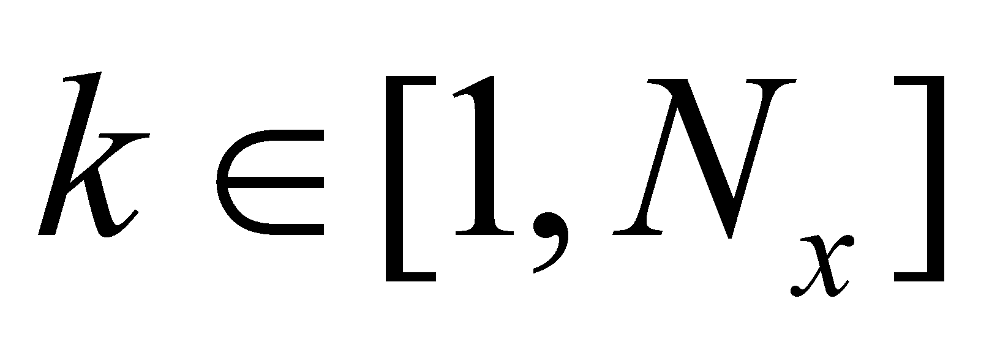
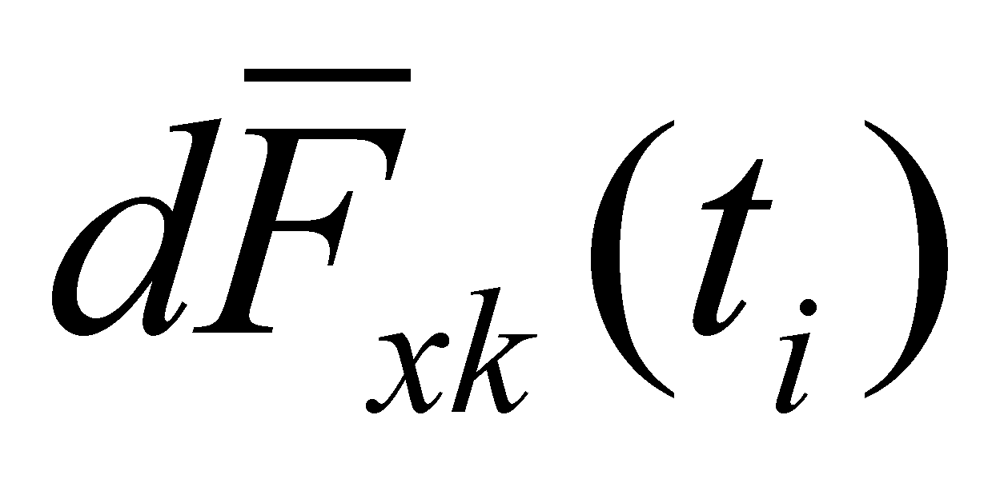

|
|
|
Specific rules are required for the clear differentiation (separation, distinction) of the sensorial attributes:
Two sensations which are coming from the same elementary information channel (the same sensory cell), at different moments, can be different only in terms of quantity. If the quantitative difference between the information produced at successive moments (temporally adjacent) is non-zero, we shall be dealing with a temporally distributed quantitative process (an evolution).
The elementary sensations which are simultaneously generated by different information channels (different sensory cells) are different in terms of quality. We saw that the set of all these sensations generated at the moment t by a specific sensory organ makes-up a sensorial distribution (distribution which, according to the classification from chapter 2 is a primary distribution. Because the spatial positions of the sensory cells are invariant for a certain sensory organ, they make-up a S-type system, and the sensorial distributions shall be also S-type (abstract) objects. As for the visual, tactile and thermal sensory distributions, this kind of distribution which may be found at a certain moment represents a form (structure, configuration) of the flux sources from the outside of the organism. In case of the auditory sensorial distributions, there is a frequency-based primary spatial distribution of the intensity reached by the frequency components belonging to an acoustic flux, namely a spectrum (sound).
If the quantitative difference between the information generated by the spatially adjacent channels of the same sensory cell distribution is non-zero, we shall be dealing with a spatially distributed quantitative process (a derived distribution with a spatial support of the contrast). The evolutions (described at point 1) are derived distributions with temporal support of the above-mentioned spatial distributions.
The instantaneous sensorial information (sensorial distribution) which can be found at the moment ti at the output of a sensory organ x is made-up from Nx elementary sensorial data, which are different in terms of quality (Nx is the number of the same type sensory cells which compose the sensory organ x). A certain sensory cell Cxk () of the organ x shall provide at the output the elementary information Sxk(ti) at the moment ti, and at the moment ti+1, the same cell shall provide the elementary information Sxk(ti+1). Between the elementary information Sxk(ti) and Sxk(ti+1) only quantitative differences (quantitative contrast) can exist, whereas between two different cells, the contrast is qualitative but it can be also quantitative.
We may say that there are two variable types: qualitative and quantitative. The variable x is a qualitative variable which is external to the sensory organs; it receives values against the reference system of the organism. The variable k is also a qualitative variable, but it is internal to a specific sensory organ; it receives values against the internal reference of that sensory organ, defining the cell position within that organ.
The
elementary information Sxk(ti)
is proportional with (depends on) the elementary flux intensitysent
through the RBS of the cell Cxk
at the moment ti.
We are reminding you that the discrete variable x
which makes a formal differentiation of
the sensory organs, it also differentiates the flux types which can
be received by those organs.
Copyright © 2006-2011 Aurel Rusu. All rights reserved.